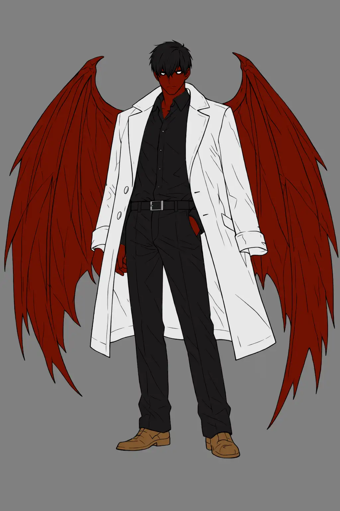

Atomized Networks
In the recent days I’ve been thinking about the direction of social interactions in my games, due to an event I’ve recently attended. During this event one of the panels was speaking about a difference between how western and eastern people perceive relations and networks. I’ve been subconsciously using these ideas, but now I think I can properly say, what I was doing on the past.

For the Game Masters
At some point you have probably wondered, why your world feels so static, contained – more like a video game, than a TTRPG. You are not alone, and most of us probably encountered this roadblock on our journeys. I did not know it at the time, but this would be one of the most important moments defining my style.>
When I design the playspace for my players I don’t think in terms of activities or encounters, but networks and friction within them. The story requires friction, which is often lacking in modern products – they lack the stakes, so I’ve set upon myself to do something with that.
I always start creating from a few pillars of community (network), that are pivotal in how the created environment operates – leaders, socialites, antagonists, they all create situations and friction for the players. You do not give them a quest marker, but an argument between a leader and his subordinate.
When you start working in this way, you would see that it requires much more thinking creatively than standard modern fantasy way, but the situations you put your players in will at some point become more natural and dynamic.
The pitfall here is, when you give too little direction, which I sometimes also found myself doing or all the NPCs being antagonistic to the players. THEY NEED A SAFETY NET, a place to fallback to, a friendly barkeep or a guildhall, because without it them may feel not welcome in the world you have created and they will quit.
This method is a balancing act on a very tight rope, but when it works it is great and will remain in your and your players’ mind for a long time.
For the Players
To live in the world, one needs to interact with it. Even if the GM builds the best, largest and most detailed world they can, it will amount to nothing if players refuse to engage. Probe, speculate and try to dissect what they have build. When you see a metaphorical web, try to wedge yourself in between. You can also, with GM discretion, make your own webs to exist in the world and with that cooperation connect your character to the living organism that is the world.
The GM creates friction and the players respond, either by resolving a situation or creating their own friction within, don’t be afraid and step forward. Making an antisocial character will make everyone around the table enjoy the game less, and sometimes you need to step out of your comfort zone.
When stepping out of your comfort zone, remember to also push and encourage your GM to do so themselves, as without struggle there is no growth and when things stop growing their die.
Closing Thoughts
If you take one thing from this article is that friction and struggle are what creates compelling stories, and these two appear by themselves when you create interactions and situations – not plot and quests. The latter are the result of the former and not the other way around, so set forth, put yourselves in situations and see you you fare against all the friction you encounter.